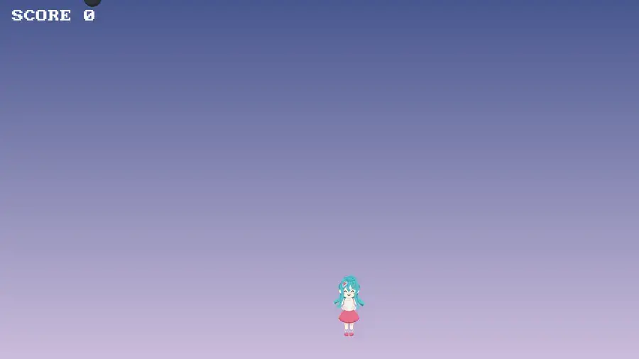
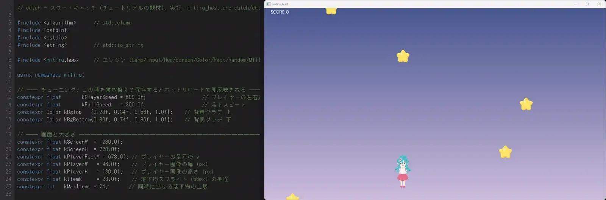
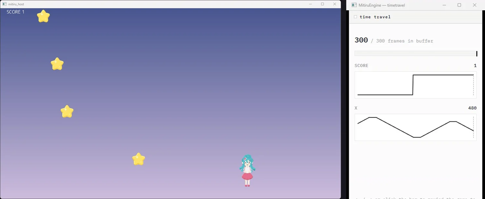
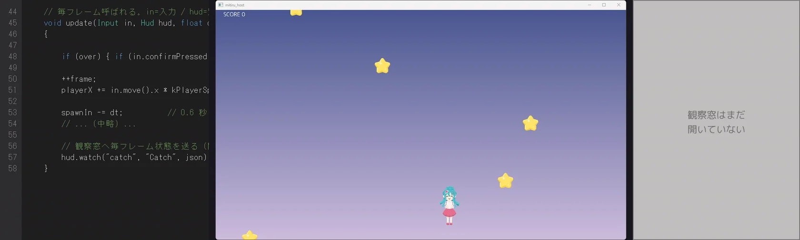
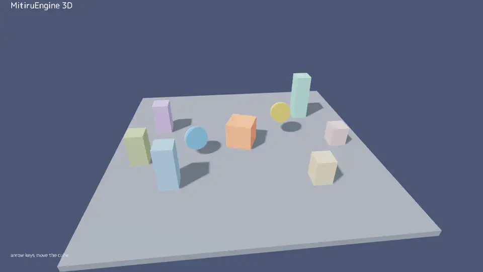

/ engine
MitiruEngine
ひとりで書き続けている、自作の C++ ゲームエンジンです。ゲームの中身（動き・当たり判定・物理）は C++ で、画面（HUD・メニュー）は Web と同じ HTML / CSS で書きます。2D も GPU 3D（影・MSAA 付き）も描き、書いたコードは止めずにその場で反映、プレイはまるごと巻き戻して観察できます。以下、実機の録画と図解で。
これは何か
1 つのゲームを、得意な道具で分けて書く
ゲームは「動くルール」と「見せる画面」でできています。MitiruEngine はそれを別々の言葉で書きます ── ルールは速くて壊れにくい C++、画面はレイアウトが得意な HTML / CSS。データ（セリフや設定）は JSON。境界はうすく、状態の持ち主は常に C++ 側です。
下は実際にこのエンジンで作った小さなゲームです。プレイヤーを左右に動かし、落ちてくる星をキャッチしてスコアを伸ばします。プレイヤーや星は C++ が描き、スコアの表示は HTML / CSS です。

描画は DirectX 12 を主軸に、DirectX 11 フォールバックを備えます。バックエンドは内部で IDevice として抽象化していて OpenGL / Vulkan / WebGL / WebGPU の実装も持ちますが、ゲームを通して安定して描けるのは現状 DirectX 12 / 11 です。
ゲームの書き方
状態の struct と、update / draw だけ
書くのは「状態のまとまり（struct）」と「毎フレームの処理（update / draw）」。エンジンは毎フレーム入力を読んで update を呼び、続けて draw で画面を描く ── これを 1 秒に 60 回くり返します。最後の 1 行でエンジンに繋がります。
// 状態は「数値だけ」を struct に持つ
struct StarCatch {
float playerX = 600;
int score = 0;
void update(Input in, Hud hud, float dt) {
if (in.down(Key::Left)) playerX -= 480 * dt; // ← キーで左へ
if (in.down(Key::Right)) playerX += 480 * dt;
hud.set("view.hud.score", score); // スコアを画面へ送る
}
void draw(Screen& s) { /* プレイヤーや星を描く */ }
};
MITIRU_GAME(StarCatch) // この 1 行でエンジンに繋がる画面は HTML / CSS で
UI を Web ページのように書く
HUD やメニューは scene.html に HTML / CSS で書きます。C++ が送った値は <span data-m-text="view.hud.score"> のように属性で受けるだけ ── つなぎの JavaScript は書きません。やり取りは「信号」だけで、状態の持ち主は C++ のまま。見た目（CSS）とルール（C++）が混ざりません。

scene.html に HUD を 1 行足して保存すると、再ビルドせずその場で画面に出る。止めずに直す（ホットリロード）
数字を変えて、手触りをその場で確かめる
ゲームのコードを保存すると、動いているゲームを止めずにその場で反映されます。プレイヤーの速度・落下のはやさ・背景色を書き換えると、走ったまま変わり、スコアなどの状態はそのまま保たれます。「ちょっと速すぎる / 遅すぎる」を、止めて・直して・また立ち上げる、を待たずに詰められます。

巻き戻して、観察する
いちばんの特徴 ── 過去のどの瞬間にも戻れる
プレイ中の状態は毎フレーム自動で記録されています。開発ツールの時間軸ウィンドウ（ゲームとは別の窓）で値の履歴がグラフになり、グラフの過去をクリックすると、ゲームがその瞬間の状態へまるごと巻き戻ります。「なぜか HP が減った」を、その手前まで戻って目で確かめられます。

同じ仕組みで、走らせたまま観察窓を開けば、playerX や score といった状態をライブで覗けます。さらに、プレイ中の入力はすべて記録されているので、同じプレイをあとからそっくり再生できます ── 「たまにしか出ないバグ」を録画して何度でも再現する、テストとして毎回流す、といった使い方ができます。

これらが成立するのは、エンジンの構造上の約束のおかげです ── ゲームの状態を、ポインタや可変長を持たない 1 個の flat POD（ただの数値のかたまり）にまとめておく。そうすると「全状態をまるごと保存・復元する」が単純なコピーになり、巻き戻し・録画リプレイ・観察が同じ 1 つの仕組みから生まれます。あとから足した機能ではなく、設計の最初からこれが目的です。
2D も、GPU 3D も
正面は 2D + HTML/CSS ですが、3D も同じ書き方で出せます。draw の中で s.camera3D でカメラを決め、s.drawMesh でメッシュ（立方体・球・板・読み込んだモデル）を置くだけ。あとはエンジンの GPU 3D レンダラーが、影（シャドウマップ）とアンチエイリアス（MSAA）付きで描きます。文字（HUD）は 2D でその上に重なります。

hello3d の実機録画。GPU 3D を影・MSAA 付きで描画。s.light3D で光の向きを変えると影もその向きに伸びる。もちろん 2D も同じエンジン・同じ書き方です。下はブロック崩しで、ボールやブロックの動きは C++、上部のスコア・残機・レベルの表示は HTML / CSS です。

大量ポリゴンや凝ったシェーダーを前提にした本格 3D は対象外です。あくまで「2D に 3D を混ぜる」「小〜中規模の 3D を出す」ための道具です。
実際に、ゲームを出せる
エンジンは「実際にゲームを出せる道具」になっていてこそです。このエンジンの上で動いている作品を並べておきます。
- ハトを育てよう（リメイク） ── 2023 年に作ったノベルゲームを、このエンジン上で完全移植。セーブ・ロードやバックログなどの追加要素込みで動いています
- かえるくれーぷ（Kaeru Crepe） ── UI をすべて HTML / CSS で組んだクッキング × ノベル。調理の中核を実機で遊べる形まで仕上げ済み
- FLUID DROP ── 積んだブロックがゼリーや液体に変わる落ちものパズル。EA SEED の流体シミュレーション（PB-MPM）を DirectX 12 へ移植して仕込んでいます
- 同梱デモ「timetravel_demo」 ── 巻き戻し・記録再生・観察をその場で触れる、看板機能のショーケース
向いていること・いないこと
目的はエンジンそのものではなく、ゲームを深く作れる人間でいるための足場です。Unity / Godot のような全部入りエディタは作らず、逆に振っています ── 道具は 1 つにつき 1 ウィンドウ、ふだんは何も開かない、操作はコマンドから。エディタは Visual Studio でも VS Code でもメモ帳でも構いません。
- 向いている ── 2D + HTML/CSS UI のゲーム／巻き戻し・録画リプレイ・観察が効く決定論的なゲーム／2D に 3D を混ぜる
- 向いていない ── 大量ポリゴンや凝ったシェーダー前提の本格 3D。そこは別のエンジンの方が向いています ── 正直に
LINKS
コードは公開しています。エンジン自体の紹介サイト（ドキュメント）も別途用意しています。